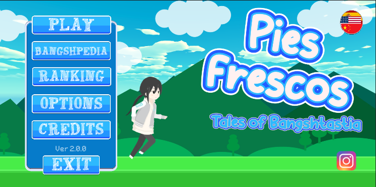
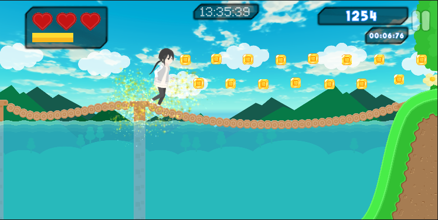
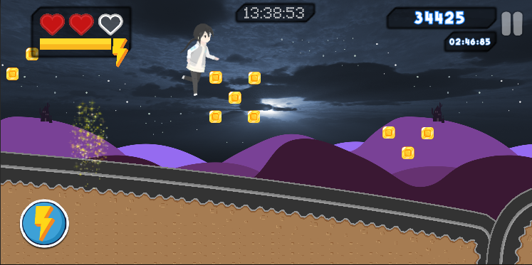
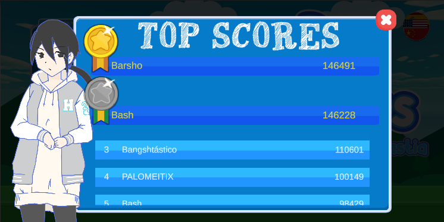

Pies Frescos
a fresh endless runner
Pies Frescos has undergone many changes over the years; old versions are playable on the web, the definitive version still awaits to be compiled.

Pies Frescos, the game that came to revolutionize racing games.
Feel the rush of a haunted runner that never slows down. Neon dunes, dark cemeteries and crunchy grass fields blend into a single frantic journey where jumping, sliding and reacting fast are the only rules.

Choose Your Path
Accompany Ero on her bangshtastic adventure full of obstacles, multi-layered screens and dangers that keep stacking the further you go.

Chase The Record
Will she accomplish her task? Only you decide. Chain flawless runs, share your highest score with your crew and keep rivalry alive.

Endless Challenge
The game never ends, only your determination does. Push your limits and see how far you can run in this infinite pixel adventure.